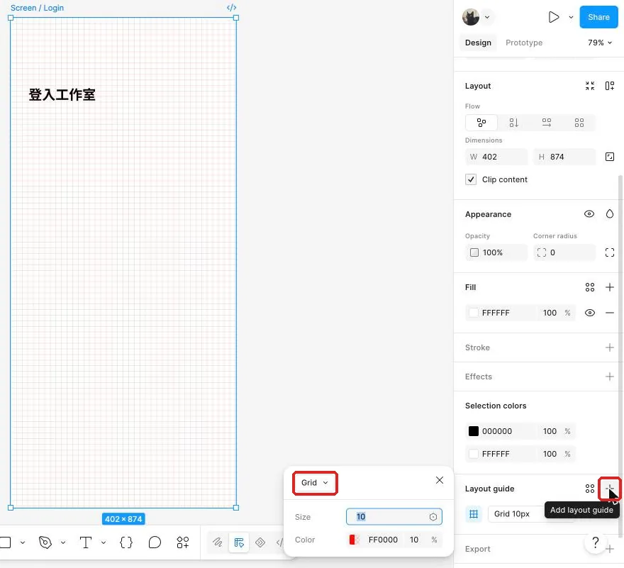
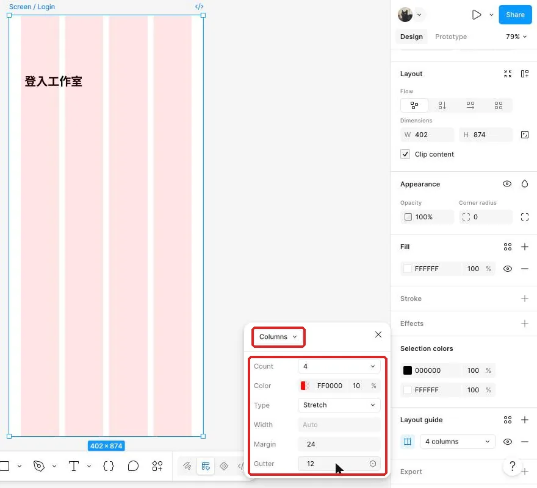
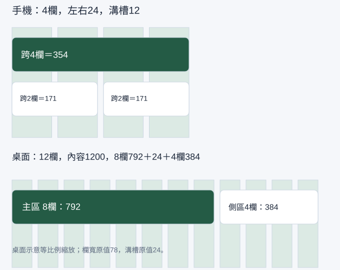
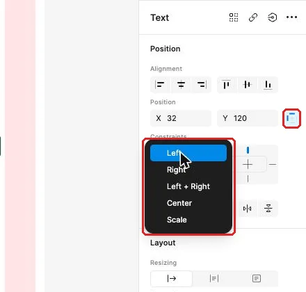

用格線安排手機與桌面版面
工作室的登入內容要在手機與桌面都能對齊，這堂用共同邊界與欄位安排清單和提醒區。
從看得清楚的登入畫面接著排版
工作室人員會在手機上登入，也可能在桌面上一次處理較多任務。上一張登入畫面已經有標題、說明與主要動作，現在遇到的問題是：這些物件若只靠眼睛拖動，左右邊界容易差幾個像素，換成桌面時也不知道清單和提醒各該占多少空間。這堂要用格線把「看起來差不多」變成可計算、可重複的版面規則。
先找出上次做好的登入畫面與 Studio 顏色變數，確認手機外框仍是原來尺寸。接著開啟本堂起始材料，對照這次要建立的圖層與內容；完成後用完成檢查表核對手機與桌面兩種結果。若手上沒有登入畫面，先回到建立顏色、文字與開頭畫面，依該頁規格表補做約 20～30 分鐘，再回來安排格線。兩種版面和前一張登入畫面都留在同一個檔案、同一頁，方便來回比較。
這堂的重點是建立共同參考，物件可以跨好幾欄。登入卡片、標題和按鈕可以跨越多欄；格線負責告訴你它們從哪裡開始、在哪裡結束，以及兩區之間該留出多少空間。
先想清楚：格線只是對齊參考
這一節要理解格線解決什麼問題，因為設定欄數之前，先要知道自己想建立哪一種秩序。邊界 Margin 是畫面邊緣到內容區的留白；欄 Column 是可供內容對齊的直向區域；溝槽 Gutter 是欄與欄之間的間隔。三者一起把可用寬度切成規律的單位。
格線的價值在於讓不同物件共享起點與終點。例如手機的畫面標題與登入卡片可以從同一條左邊界開始，卡片內的文字和主要按鈕再共享內側起點；桌面的待處理清單可以跨較多欄，今日提醒則跨較少欄。使用者感受到的是整齊，格線本身只留在設計檔裡。
| 問題 | 用格線判斷 | 只靠目測的風險 |
|---|---|---|
| 卡片該多寬 | 從左邊界跨到右邊界 | 每張卡片寬度略有不同 |
| 兩張小卡怎麼並排 | 依跨欄寬度並保留一個溝槽 | 中間縫隙與外側留白不一致 |
| 桌面怎麼分區 | 先決定主區與側區的欄數 | 內容一多就互相擠壓 |
| 手機閱讀順序 | 把桌面左右區改成上下排列 | 直接縮小桌面，文字難以閱讀 |
計算時先扣掉左右邊界，再扣掉欄與欄之間的溝槽，剩下的才是所有欄的總寬。若有四欄，內部只有三個溝槽；若有十二欄，內部則有十一個。跨兩欄的寬度要把兩個欄寬和中間一個溝槽加起來，跨完整內容區時則包含所有欄與全部內部溝槽。
格線設好後，內容仍要經過閱讀檢查。長標題可能需要更多寬度，短提醒可以放在較窄的側區；若文字在指定寬度下出現很零碎的換行，就重新分配跨欄，字級維持原樣。格線提供一致的起點，內容則決定最後如何使用這些欄。
跨欄決策可以從「這段內容要完成什麼工作」開始。登入卡片是手機上的主要任務，適合使用完整內容寬度；兩個短選項若重要性相近，才適合並排。桌面待處理清單需要同時容納任務名稱、期限與狀態，因此給它較寬的主區；今日提醒只有短句，放在側區反而更容易掃讀。
同一套格線也能幫助你發現內容不適合並排。假如兩張半寬卡片都出現一個字一行的狀況，問題可能在於卡片需要更多欄。把它們改為上下排列，仍可沿用相同左右邊界；格線提供的是多種合法組合，並非要求每一欄都放入物件。
從桌面轉到手機時，空間分配還會變成閱讀順序。桌面左右同時可見，使用者能在主區和側區之間移動；手機一次只看見上方一段，設計者必須決定哪一區先出現。把最接近主要任務的內容放在前面，再讓提醒接在後面，比照搬左右位置更符合小螢幕使用方式。
畫面寬度還會在同一類裝置裡變動。常見手機寬度約在 360～430，平板可先以 768 作為參考，桌面常見設計寬度約為 1280～1440。本課實作手機與桌面兩種，平板寬度用來理解中間還有其他狀態。格線處理內容的共同邊界，Constraints（約束）則決定父層變寬時，子物件要貼左、貼右、左右一起拉寬、保持置中或等比縮放。
示範：先做手機格線，再分桌面雙區
這一節會建立兩組版面，所有主線尺寸都先集中在規格表。操作時只引用畫面或區塊名稱，做完每一步都要能看到明確結果。
| 畫面或區塊 | 圖層名 | 尺寸或位置 | 格線與用途 |
|---|---|---|---|
| 手機登入畫面 | Screen / Login | 402 × 874 | 4 欄、Type 維持 Stretch、左右邊界 24、溝槽 12 |
| 手機登入卡片 | Login / Card | x 24、y 120、W 354、H 160 | 父層是 Screen / Login；內含說明、提示與主要動作 |
| 既有標題 | Title | 開始時父層是 Login / Card | 上次已做好的「登入工作室」；本堂移出卡片後改名 |
| 畫面上方標題 | Screen / Heading | x 24、y 64；父層是 Screen / Login | 由 Title 移出卡片後改名，用來練習 Constraints |
| 訊息文字 | Message | x 16、y 16 | 從原位置往上移 48 |
| 輔助提示 | Hint | x 16、y 56 | 從原位置往上移 48 |
| 主要按鈕 | Button / Draft | x 16、y 94、W 322、H 48 | 從原位置往上移 48 |
| 手機半寬區一 | Reference / Half 1 | x 24、y 914、W 171、H 120 | 以 Screen / Login 在 Section 內 x 0、y 0 為基準；並排內容測試 |
| 手機半寬區二 | Reference / Half 2 | x 207、y 914、W 171、H 120 | 以 Screen / Login 在 Section 內 x 0、y 0 為基準；與前區相隔一個溝槽 |
| 桌面參考畫面 | Screen / Desktop reference | 1440 × 900 | 12 欄、Type 維持 Stretch、左右邊界 120、溝槽 24 |
| 桌面格線算式 | — | 每欄 (1440－120 × 2－24 × 11) ÷ 12＝78 | 跨 4 欄為 384；跨 8 欄為 792 |
| 桌面主內容 | Desktop / Main | x 120、y 120、W 792、H 540 | 用 Frame（F）建立；跨 8 欄，放待處理清單 |
| 清單參考卡片 | Reference / List Card | x 0、y 56、W 384、H 120 | 位置以 Desktop / Main 為基準；跨 4 欄 |
| 詳情參考卡片 | Reference / Detail Card | x 0、y 200、W 792、H 320 | 位置以 Desktop / Main 為基準；跨 8 欄 |
| 桌面側區 | Desktop / Aside | x 936、y 120、W 384、H 540；標題 y 16 | 跨 4 欄，放今日提醒 |
- 選取
Screen / Login（手機登入畫面），在右側 Design 面板最下方的 Layout guide 區塊點 ＋（Add layout guide）；完成後，畫面上會出現預設的參考格。

- 把類型下拉選單從預設的 Grid 改成 Columns，Type 維持預設的 Stretch，再輸入手機格線規格；完成後，畫面會被分成四個直向欄位。

- 按 Shift+G 隱藏再顯示格線；完成後，你會確認快捷鍵只改變參考線的可見狀態，內容位置保持不變。
- 在 Layers 把
Title從Login / Card（登入卡片）拖到Screen / Login，再改名為Screen / Heading（畫面上方標題）；完成後，登入工作室標題會顯示在卡片外。 - 依規格表設定畫面上方標題的位置；完成後，「登入工作室」會位於畫面 x 24、y 64。
- 同時選取卡片裡的
Message、Hint與Button / Draft，按 Shift+↑ 四次，再按 ↑ 八次（共上移 48）；完成後，三個子層的 Y 依序為 16、56、94。 - 把登入卡片的 H 改成 160；完成後，白色卡片會縮短並包住說明、提示與主要按鈕。
- 在主線 Section 內、手機畫面外的空白處用 R 建立兩個半寬參考區，依規格表設定位置與尺寸。這組座標以
Screen / Login在 Section 內 x 0、y 0 為基準；若你的手機不在左上角，改放在手機框下方 40 的位置。完成後，兩區之間會剛好保留一個溝槽，並且不會蓋住登入畫面。 - 先把主線 Section 拉寬到 3000 以上。在 Section 內、手機畫面右側不會蓋到
Rules的空白處按 F 拖出一個 Frame，在右側 W、H 輸入 1440、900，再到 Layers 雙擊名稱改成Screen / Desktop reference（桌面參考畫面）；完成後，Layers 會出現與Screen / Login同層的桌面畫面，尺寸顯示 1440 × 900。 - 選取桌面參考畫面，照第 1、2 步加入 Columns 類型、Type 維持 Stretch 的桌面格線，填入規格表的欄數、邊界與溝槽；完成後，桌面畫面會完整留在 Section 內，並有十二欄與更寬的兩側邊界。
- 按 F，直接在桌面參考畫面裡拖出 Frame，讓它成為
Screen / Desktop reference的子層，再改名為Desktop / Main（桌面主內容區）。接著依規格表輸入 X、Y、W、H；桌面區塊的 X、Y 都以桌面參考畫面的左上角為 0，不是整個畫布的座標。完成後，Layers 會顯示Desktop / Main縮排在桌面參考畫面下方，桌面左側出現跨八欄的 Frame。 - 在桌面主內容區放入待處理清單標題，再按 F，在
Desktop / Main裡拖出兩張參考卡片並依規格表命名、設定位置與尺寸；這兩張卡片的座標以Desktop / Main左上角為 0。完成後，兩張卡片會縮排在Desktop / Main下方，並對齊主內容區左緣。 - 按 F，同樣在桌面參考畫面裡拖出 Frame，改名為
Desktop / Aside（桌面側區），依規格表設定位置與尺寸（H 540），再把「今日提醒」標題放在 y 16 並加入一段短說明；完成後，側區高度會與Desktop / Main一致，桌面形成左主右輔的雙區配置。 - 關閉兩個畫面的格線，檢查標題、卡片與區塊邊界；完成後，即使參考線已隱藏，內容仍會呈現一致秩序。
手機計算可以用一個例子確認方法：畫面寬度扣掉左右邊界，再扣掉三個溝槽，剩餘寬度平均分給四欄，因此每欄是 79.5。跨兩欄時要加回中間的一個溝槽，所以得到 171；跨四欄則是完整內容寬 354。這個算式只示範一次，後面的尺寸都回到規格表查。
桌面版採同一方法，只是欄數和邊界不同；欄寬與跨欄結果集中在規格表。主內容與詳情卡跨八欄，清單卡與側區跨四欄；兩張參考卡片在 Desktop / Main 內都從左緣開始，因此會對齊主內容區。
做完兩組版面後，先用格線檢查幾何關係，再用內容檢查閱讀品質。幾何檢查關心起點、終點、溝槽與跨欄；內容檢查關心句子換行、重要性與先後順序。兩種檢查都通過，版面才同時具備規律與可讀性。

跟著做：自己判斷內容該跨幾欄
這一節要少看數值、多看內容。你會沿用示範建立好的格線，自行決定三種內容如何占用欄位，再從結果反推理由。
- 複製手機登入卡片裡的
Message，把副本拖到卡片外的空白處。先把副本的文字尺寸模式改為 Auto height，再把 W 設為 322，並改成較長的用途說明。用副本判斷內容適合跨滿內容區或只占部分欄位，觀察自然換行後刪除副本；完成後，副本曾在 322 px 寬度內完整換行，正式登入卡片仍只包含Message、Hint與Button / Draft三個子層，原本的短句也會保留。 - 在桌面主內容區加入「整理交付包」與一段期限說明，判斷這筆資料應留在主區或移到側區；完成後，資訊密度應符合所選區域的寬度。
- 在桌面側區加入兩則短提醒，調整它們的排列，使左緣與側區格線一致；完成後，提醒會形成獨立但整齊的一組。
- 把桌面左右兩區想像成手機上下排列，先寫下主區與側區誰在前面；完成後，閱讀順序會有一個和工作任務相關的理由。
- 開啟格線檢查所有區塊，再關閉格線檢查成品；完成後，兩種觀看狀態都能看出共同邊界。
- 在
Rules旁寫下你的跨欄決策，說明「內容長度、重要性、閱讀順序」各影響了什麼；完成後，這份紀錄能讓你日後重做相同判斷。 - 刪除
Reference / Half 1與Reference / Half 2；完成後，主線 Section 不會留下本次跨欄測試用的半寬參考區。
完成後，再挑一張卡片做反向測試。先把它縮到較少欄，觀察標題、說明與狀態如何換行；再把它放回原跨欄。請記錄最早出現的閱讀問題，因為那個問題會告訴你內容需要的最低空間，比只記住某個固定寬度更能應付日後變化。
最後比較手機和桌面中的同一段工作室說明。它們可以有不同寬度與排列，但字級角色、文案意思與主要動作仍要一致。這能確認你改的是版面配置，而非無意間做出兩套互相矛盾的內容。
把兩張畫面並排縮小後，再做一輪共同邊界檢查。手機看畫面標題與卡片是否從同一條線開始，再看卡片內文字與按鈕是否共享內側起點；桌面看主區與側區是否各自守住起點。接著放大檢查長句，確認換行沒有把單位、姓名或動作切成難讀的碎片。這一輪會把格線的幾何結果和真實閱讀連在一起。
最後替跨欄紀錄補上一句「如果內容增加，我會先改什麼」。可以是讓卡片跨更多欄、把並排改為上下排列，或調整主區與側區的分工。先寫下判斷順序，日後內容改變時就能從資訊結構處理，而不會立刻縮小文字或隨意移動邊界，版面理由也更容易交代。
需要計算提示時再展開
跨欄寬度等於所有欄寬，加上這些欄之間的溝槽；先數跨了幾欄，再數中間有幾個間隔。
讓手機變寬時，內容知道要跟著誰
格線能告訴你物件應落在哪條參考線上，但拖動 Frame 右邊界時，格線不會替子物件改位置。Constraints 用父層當基準，描述子物件如何回應寬度變化。這次先在沒有 Auto layout 的登入畫面練習，避免把兩套規則混在同一個父層裡判斷。
| 物件 | 父層 | 水平 Constraints | 變寬時的預期結果 |
|---|---|---|---|
Screen / Heading | Screen / Login | Left + Right | 左右邊界一起延伸，文字區可使用新增空間 |
Login / Card | Screen / Login | Left + Right | 卡片跟著畫面使用新增寬度 |
Button / Draft | Login / Card | Center | 按鈕維持原寬並跟著卡片中心移動 |
| 裝飾插圖 | Screen / Login | Scale | 寬高與位置依父層比例一起變化 |
- 在 Layers 找到
Screen / Heading；完成後，你會確認它是Screen / Login的直接子層，畫面只保留原來那一個「登入工作室」。 - 展開
Login / Card，確認裡面只有Message、Hint與Button / Draft；完成後，Layers 會顯示三個子層依序位於卡片內。 - 選取畫面上方標題，在 Position 下方的 Constraints 下拉選單把水平設定為 Left + Right。若沒看到 Constraints，點 X／Y 右側的小圖示展開；完成後，右側會顯示標題同時參考畫面左右兩邊。

- 選取登入卡片，以相同入口把水平設定為 Left + Right；完成後，卡片會跟著手機畫面拉寬。
- 選取卡片內的主要按鈕，以相同入口把水平設定為 Center；完成後，按鈕會以卡片中心作為位置基準。
- 選取最外層登入畫面，在 W 欄把寬度由 402 改成 440；完成後，畫面上方標題與登入卡片會拉寬，按鈕維持寬度並移到新的中央位置。
- 觀察其他沒有設定的物件，記下哪些仍停在左邊、哪些因此失去原本的對齊；完成後，你會有一份「有回應／沒回應」比較。
- 把登入畫面寬度改回 402；完成後，標題、卡片與按鈕會回到原本版面，主線尺寸可繼續使用。
- 若畫面裡有純裝飾插圖，可在副本把它設為 Scale，再改一次父層寬度；完成後，插圖會依比例改變。文字、按鈕與功能圖示維持前述規則。
Constraints 只在物件位於一般 Frame 父層時使用。父層若已是 Auto layout，子物件改用 Fill container 回應可用寬度，再用 Min／Max 限制最窄與最寬；這組做法會在接下來的自動排列實作中使用。選設定前先看 Layers 與父層類型，能省下反覆切換卻看不到結果的時間。
比較兩種寬度時，請把畫面並排放在同一頁，維持相同縮放比例。除了看物件有沒有移動，也要檢查標題換行、按鈕與邊界的距離，以及主要動作是否仍能快速找到；這些觀察會比「看起來差不多」更容易轉成可重複的響應式規則。
想像兩版手機拉寬結果，判斷哪一版回應正確
這一節要判斷格線與 Constraints 是否各自完成工作。版本一的手機畫面使用四欄共同邊界，畫面上方標題與登入卡片設 Left + Right，卡片內的主要按鈕設 Center；把 Frame 拉寬後，標題與卡片取得更多寬度，按鈕仍位於卡片中央。版本二同樣使用四欄，但所有物件都設為 Scale；拉寬後看起來仍大致整齊，文字與按鈕也一起變大。
請判斷哪一版適合一般手機介面，並指出另一版在什麼細節開始出問題。觀察時分別說明格線控制了什麼、Constraints 控制了什麼，以及按鈕文字變大是否等於版面回應得更好。
看完自己的判斷再展開
版本一正確。格線維持共同邊界，標題用新增寬度改善換行，按鈕則保持原尺寸並重新置中。版本二乍看仍對齊，但 Scale 會把文字與功能元件一起放大，字級、觸控尺寸與元件規格因此失去一致性；Scale 比較適合插圖。
卡住時，先分清楚畫面、格線與內容
這一節把常見錯誤分成三個層級。Frame 決定畫面範圍，格線提供參考，內容物件才是實際會出現在成品裡的東西。
| 看到的現象 | 通常的原因 | 怎麼修 |
|---|---|---|
| Add layout guide 沒出現 | 選到 Rectangle 或內層物件 | 到 Layers 選最外層 Frame |
| 出現方格而非直欄 | 類型還是預設的 Grid | 從類型下拉改成 Columns |
| 最右邊像多一條間隔 | 把溝槽數算成和欄數相同 | 重新數內部間隔，欄與欄之間才有溝槽 |
| 卡片蓋住左右留白 | 把畫面寬度當成內容寬度 | 讓卡片起點與終點貼齊內容邊界 |
| 改畫面寬度後卡片沒變 | 格線只提供參考 | 重新計算可用寬度，再調整內容物件 |
| 桌面縮成手機後字太小 | 把整個版面等比縮放 | 保留文字規則，改成由上到下的閱讀順序 |
| 拉寬 Frame 後畫面上方標題仍留在左側 | 標題沿用預設 Left | 在 Screen / Login 內，把水平 Constraints 改為 Left + Right |
| 看不到 Constraints | 父層是 Auto layout | 改用 Fill container；需要限制寬度時再設定 Min／Max |
還要留意 Auto layout 也有一個名為 Grid 的選項，那是另一種排列功能。本堂使用 Frame 上的 Add layout guide 來建立 Columns，畫面上的參考線只協助對齊。
換你做：你的題目
從你的畫面清單挑出這次對應的畫面。接著為手機建立四欄格線，規劃桌面左清單、右詳情的雙區配置，最後把開頭畫面從 360 改成 412，留下兩張寬度比較圖。
三個題目的建議對應：
| 預約 | 點餐 | 會員 |
|---|---|---|
| 手機放歡迎訊息與「開始預約」；桌面左側放服務清單，右側放服務詳情。 | 手機放店名、營業時間與「開始點餐」；桌面左側放菜單，右側放品項詳情。 | 手機放登入標題、欄位與按鈕；桌面左側放兌換品，右側放兌換規則與品項詳情。 |
要達成的條件：
- 這次做的畫面在你的畫面清單上；清單沒有的，先補進清單並寫一句理由。
- 手機格線有四欄，邊界與溝槽由你設定並留下理由。
- 自己算出單欄、跨兩欄與跨四欄的寬度，算式能讓人看懂每一項來源。
- 題目的長文字資料放進預計的內容區後仍能自然換行。
- 桌面版明確分成左側清單與右側詳情，兩區共享同一套欄線。
- 桌面內容改成手機上下排列時，先後順序有工作理由。
- 開頭畫面在兩種手機寬度下使用同一套文字與元件規格，並以 Constraints 調整位置或寬度。
合格的結果要能通過這些自我檢查：
- 左右邊界一致，最外側內容沒有落進邊界留白。
- 並排區塊之間保留完整溝槽，跨欄算式與 Figma 實際寬度相符。
- 關閉格線後，卡片與標題仍看得出共同起點。
- 長文字沒有靠縮小文字塞入，桌面雙區也沒有互相重疊。
- 兩張手機畫面截圖能指出哪個物件拉寬、哪個置中，以及這項選擇的理由。
- 412 寬畫面沒有把文字、按鈕或功能圖示等比放大。
真的卡住再看：提示
先確認物件的父層類型；一般 Frame 裡從 Position 展開 Constraints，若父層已是 Auto layout，則從寬度模式找 Fill container。
用共同邊界準備下一次內容變化
回到工作室情境，你現在有一張對齊清楚的手機登入畫面，也有一張主次分明的桌面雙區版面。格線讓標題、卡片和按鈕共享邊界，跨欄紀錄則說明每個寬度從哪裡來。下一次會把登入內容放進會隨文字增高的容器，讓說明變長、提示增加或畫面變窄時，按鈕仍能自動往下排列。
完成條件：
- 手機版面有四欄參考線，登入內容與左右邊界對齊。
- 桌面版面有十二欄參考線，主內容與側區分工清楚。
- 至少一組跨欄計算能對應到 Figma 的實際寬度。
- 開關格線後，內容位置與閱讀順序都維持一致。
想一想：格線已經把卡片對齊，為什麼文字變長時仍可能擠到下方按鈕？
展開參考答案
格線只提供水平對齊與寬度參考，不會管理內容高度或物件之間的垂直排列；文字長高時還需要能包住內容並重新排列子層的容器。
本堂查證來源
來源查證：2026-11-02。